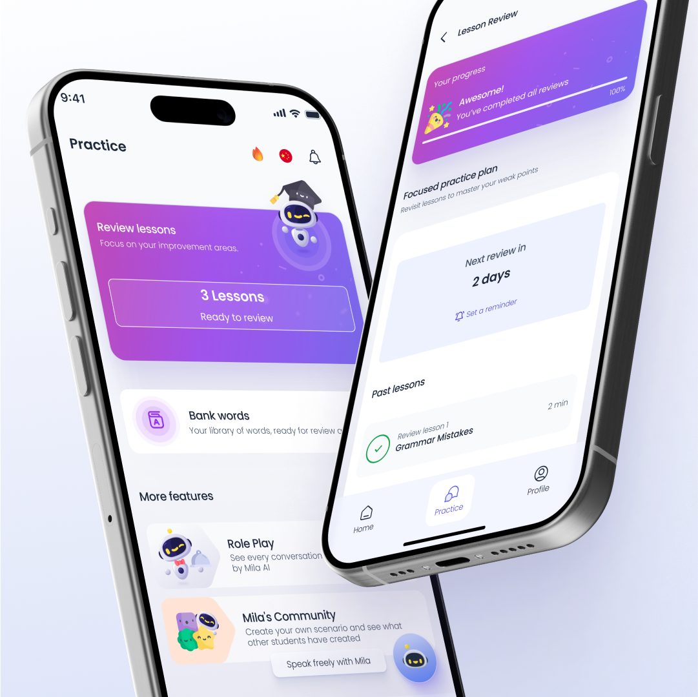
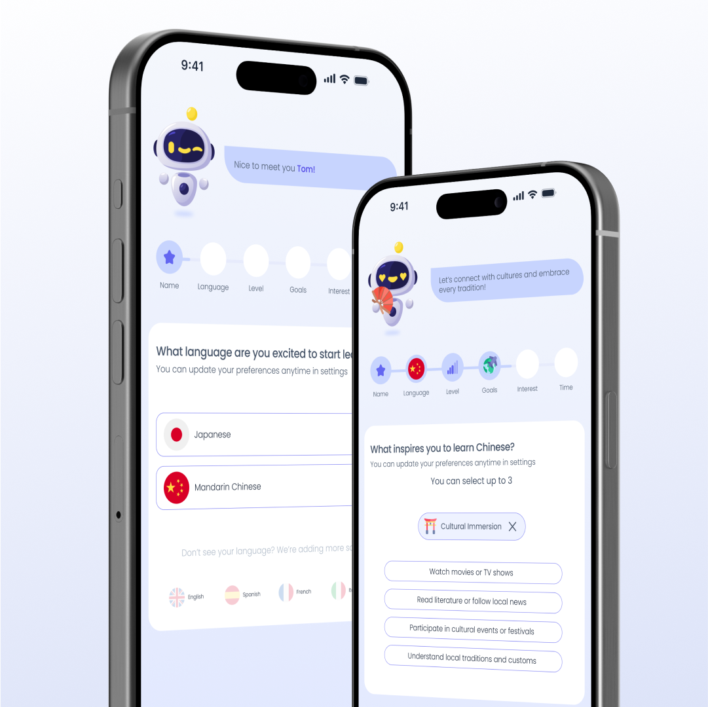
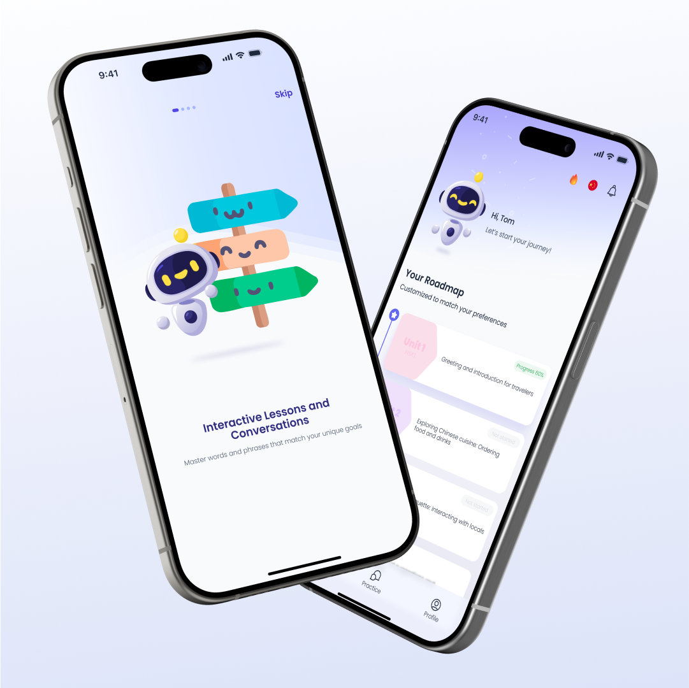

Redesigning a web-based platform into an AI-driven mobile app — reducing friction and making personalisation visible to the user.

Mila AI had a real problem: the AI was working but nobody could see it. Users navigated through menus to reach a single lesson, lost their place constantly, and had no sense the product was adapting to them. The tech was there. The experience wasn't.
"A language learning app only works if people come back tomorrow. Mila had rich AI-generated content and a solid tech foundation — but the mobile experience was an afterthought built on top of a desktop product. Users were dropping off before they saw the value. The brief wasn't "make it look better." It was: rethink how learning progression, personalisation and continuity should work for someone using their phone in 10-minute sessions on the tube."
Rebuilt IA around quick access and clear progression. Fewer steps to the lesson, clearer sense of where you are.
Users define goals and level on first launch. The system adapts immediately, creating ownership from day one.
A dynamic roadmap that unlocks based on progress and makes AI-driven adaptation visible — turning AI from backend logic into a feature the user can see.
Progress saves automatically. "Continue Learning" is the primary action. Users re-enter without losing context — one tap to resume.
I started by auditing the existing flow against how users actually behave on mobile: short sessions, frequent interruptions, one thumb. Then I benchmarked against the three apps that own this space — Duolingo, Falou and SuperChinese — to understand what patterns users already know.Four things had to change.


Making AI feel useful and visible to non-technical users is one of the hardest UX challenges. It's one I specialise in.
Book a free call